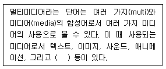
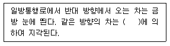
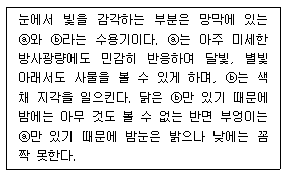
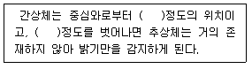
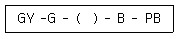

컬러리스트기사 (2012-03-04 기출문제)
1과목: 색채심리 마케팅
1. 사람마다 동일한 대상의 색채를 다르게 지각할 수 있다. 이러한 개인별 차이를 갖게 하는 요인이 아닌 것은?
- 물체에서 나오는 빛의 특성
- 생활습관과 행동 양식
- 지역의 문화적인 배경
- 지역의 풍토적 특성
(정답률: 알수없음)

2. 잡지 매체의 특징이 아닌 것은?
- 생명력이 짧다.
- 주의력 집중이 높다.
- 표적고객 선별성이 높다.
- 회람률이 높다.
(정답률: 73%)
3. 특정 제품의 색채 이미지에 관한 설문조사를 하고자 한다. 이를 위하여 대상에 대한 이미지를 파악하는 설문 방법 중 형용사 반대어를 사용하여 조사하는 방법은?
- 메트릭스법
- 사지선다형
- 의미미분법(SD법)
- 브레인스토밍
(정답률: 알수없음)
4. 광고매체의 효율적인 촉진전략에 대한 설명이 틀린것은?
- 짧은 시간 안에 판매를 대폭 늘리는 진술이 필요하다.
- 자사제품의 많은 양을 구매하도록 유도해야 한다.
- 가격에 민감한 고객들에겐 구매를 포기하게 만든다.
- 판매의 집중보다는 가급적 연중 고르게 이루어지도록 한다.
(정답률: 85%)
5. 소비자의 컬러 소비 형태를 조사하고자 한다. 시장 세분화를 위한 생활유형연구를 중심으로 연구하고자 할 때 적합한 연구방법은?
- AIO법
- SWOP법
- VALS법
- AIDMA법
(정답률: 알수없음)
6. 기업이 판매 개념에서 벗어나 고객 만족과 감동을 위한 마케팅 개념으로 변화하는 내용과 거리가 먼 것은?
- 구매자 중심의 시장(Buyer's market)
- 기업의 이윤 극대화 추구
- 품질서비스 중시, 상호만족
- 고객 중심적인 사고와 행동
(정답률: 82%)
7. 매체광고에 대한 일반적인 인식으로 틀린 것은?
- 매체광고는 순수 작품성보다 제품이 판매되도록 신뢰를 주어 구매행동으로 옮길 수 있어야 한다.
- 매체광고의 표현은 과학적인 계획성 아래 진실하며 창조적이어야 한다.
- 매체광고의 목적은 판매시장개척과 생산자와 소비자간 매출이익증대를 촉진하는데 있다.
- 광고는 판매가 목적이며 문화성, 예술성은 떨어진다.
(정답률: 74%)
8. 마케팅 믹스에 대한 설명 중 틀린 것은?
- 기업이 표적시장을 통하여 원하는 결과를 얻을 수 있도록 하기 위하여 사용하는 통제 가능한 마케팅 변수의 총집합이다.
- 제품에 대한 수요에 영향을 주기 위하여 한 기업이 시장에서 자극요소로 활용할 수 있는 모든 수단을 활용하는 것이다.
- 제품의 생산과정과 홍보와 촉진이 최종목표이다.
- 4P와 관련하여 소비자와 기업을 감성과 경험으로 연결 짓기도 한다.
(정답률: 알수없음)
9. 소비자의 욕구와 구매 패턴에 대응하기 위한 마케팅 전략의 단계가 옳은 것은?
- 다양화 마케팅 → 대량 마케팅 → 표적 마케팅
- 대량 마케팅 → 다양화 마케팅 → 표적 마케팅
- 표적 마케팅 → 대량 마케팅 → 다양화 마케팅
- 다양화 마케팅 → 표적 마케팅 → 대량 마케팅
(정답률: 알수없음)
10. 색의 분광효과로 발견된 일곱 가지 색을 칠 음계에 연계시켜 색채와 소리의 조화론을 처음으로 시사한 사람은?
- 뉴턴
- 요차네스 이텐
- 카스텔
- 먼셀
(정답률: 58%)
11. 눈의 긴장과 피로를 줄여주고 사고나 재해를 감소 시켜주는데 적합한 색은?
- 산호색
- 감청색
- 밝은 톤의 노랑
- 부드러운 톤의 녹색
(정답률: 91%)
12. 색채시장 조사의 기능이 잘 이루어진 결과와 관계가 없는 것은?
- 판매촉진의 효과가 크다.
- 사고나 재해를 감소시켜 준다.
- 의사결정 오류의 폭을 좁혀 준다.
- 유통 경제상의 절약효과를 제공한다.
(정답률: 55%)
13. 소비자의 구매행동 중 소비자에게 가장 폭 넓게 영향을 미치는 요인은?
- 사회적 요인
- 심리적 요인
- 문화적 요인
- 개인적 요인
(정답률: 30%)
14. 색채별 치료효과에서 대머리, 히스테리, 신경질, 불면증, 홍역, 간질, 쇼크, 이질, 심장 두근거림 등을 치료할 때 효과적인 색채는?
- 파랑
- 노랑
- 보라
- 주황
(정답률: 알수없음)
15. 어떤 주부가 광우병 파동 때 정육점에서 일일이 원산지를 확인했다. 매슬로우(Maslow)의 욕구 단계 중 어디에 해당되는가?
- 생리적 욕구
- 안전욕구
- 사회적 욕구
- 자아실현의 욕구
(정답률: 알수없음)
16. 색채와 다른 감각간의 교류 현상으로 옳은 것은?
- 촉촉한 느낌 –파랑과 청록의 한색계열
- 짠맛 –red
- 쓴맛 –yellow
- 부드러운 감촉 –저명도 저채도의 색채
(정답률: 90%)
17. 색채 마케팅의 전략에서 소비자의 활동과 흥미와 관심, 의견, 인구학적 차원 등에 관한 스타일을 분석해서 유형별로 구분지어 놓은 것을 무엇이라고 하는가?
- 소비자 구매행동 분석
- 라이트스타일 분석
- 색채 이미지 분석
- 소비자 선호도 조사
(정답률: 63%)
18. 다음 중 기업의 이미지를 색채의 제안을 통해 직접적으로 보여주면서 소비자를 직접 만날 수 있는 기회를 가지는 PR의 가장 적극적인 형태는?
- 기사홍보
- 광고
- 프레스 릴리스(press release)
- 전시 이벤트
(정답률: 알수없음)
19. 색채 마케팅 전략의 영향 요인 중 비교적 관계가 가장 적은 것은?
- 인구 통계적, 경제적 환경
- 잠재의식, 심리적 환경
- 기술적, 자연적 환경
- 사회, 문화적 환경
(정답률: 10%)
20. 소비자들에 의해 그 제품의 속성이 어떻게 인지되는가를 의미하는 용어는?
- 제품의 위치(Positioning)
- 제품의 차별화(Product Differentiation)
- 시장 세분화(Market Segmentation)
- 소비자 라이프 스타일(Life Style)
(정답률: 알수없음)
2과목: 색채디자인
21. 러시아 구성주의자인 엘 리시츠키의 작품을 일컫는 대표적인 조형언어는?
- 팩투라(factura)
- 아키텍톤(architecton)
- 프라운(proun)
- 릴리프(relief)
(정답률: 37%)
22. 아래의 ( )에 가장 알맞은 용어는?

- 아이콘
- 포스터
- 동영상
- 게임
(정답률: 알수없음)
23. 큰 원에 둘러싸인 중심의 원과 작은 원에 둘러싸인 중심의 원은 동일한 크기이지만 다르게 보인다. 이는 무엇 때문인가?
- 길이의 착시
- 형태의 착시
- 방향의 착시
- 크기의 착시
(정답률: 알수없음)
24. 18세기에서 19세기에 걸쳐 일어난 산업혁명이 산업디자인에 끼친 가장 커다란 영향은?
- 대량생산으로 인한 가격 저하에 따른 품질의 저하
- 다양한 제품이 생산됨으로써 소비자층 확산
- 보다 더 정교해진 제품의 장식
- 튼튼한 제품이 생산됨으로 제품의 수명주기 연장
(정답률: 80%)
25. 다음 중 유행색에 대한 설명으로 틀린 것은?
- 어떤 계절이나 일정기간 동안 특별히 많은 사람에 의해 입혀지고 선호도가 높은 색이다.
- 유행예측 색으로 색채전문기관들에 의해 유행할 것으로 예측하는 색이다.
- 패션산업에서는 실 시즌의 약 3개월 전에 유행예측 색이 제안되고 있다.
- 1992년 설립된 한국유행색산업협회가 있어 국제유 행색협회에 공식적으로 참가하여 제안하였다.
(정답률: 47%)
26. 세계화 시대에서 디자인 경쟁력의 방법으로 관련이 적은 것은?
- 지역적 특수가치 개발
- 유기적이고 자생적인 토속적 양식
- 친자연성
- 전통을 배제한 정보시대에 적합한 기술 개발
(정답률: 50%)
27. 현대 산업사회의 특징인 대중문화 속에 등장하는 이미지를 미술로 수용한 사조는?
- 팝아트
- 옵아트
- 미니멀리즘
- 포스트모더니즘
(정답률: 알수없음)
28. 기업이미지 통일화 정책을 의미하며 다른 기업과의 차이점 표출을 통해 지속성과 일관성, 기업 문화 및 경영전략 등을 구성하는 CI의 3대 기본요소가 아닌 것은?
- VI(Visual Identity)
- BI(Behavior Identity)
- LI(Language Identity)
- MI(Nind Identity)
(정답률: 알수없음)
29. 제품 색채의 결정에서 고려하지 않아도 될 요소는?
- 성별, 연령 등에 따른 기호
- 계절, 시간 등에 따른 용도
- 빠르게 변화되는 유행 성향
- 파손 방지 등을 위한 제품 보호
(정답률: 91%)
30. 각 디자인 사조와 그에 대한 설명이 옳은 것은?
- 플럭서스(Fluxus)란 원래 낡은 가구를 주워 모아 새로운 가구를 만든다는 뜻으로 저속한 모방예술을 의미한다.
- 바우하우스(Bauhaus)는 신조형주의 운동으로서 개성을 배제하는 주지주의적 추상미술운동이다.
- 다다이즘(Dadaism)의 화가들은 자연적 형태는 기하학적인 동일체의 방향으로 단순화시키거나 세련되게 할 수도 있다고 하였다.
- 비대칭 추상미술의 대표자인 바실리 칸딘스키는 강한 원색대비와 후기에는 단순한 명도대비에 의한 작품을 남겼다.
(정답률: 알수없음)
31. 색채계획에서 기업색채의 선택 요점 중 틀린 것은?
- 기업 이념과 실체에 맞는 이상적 이미지를 나타내는 색
- 타사와의 차별성을 두지 않는 색
- 다양한 소재의 적용이 용이하고 관리하기 쉬운 색
- 사람에게 불쾌감을 주지 않고, 주위와 조화되는 색
(정답률: 64%)
32. 주조색과 강조색에 관한 설명 중 틀린 것은?
- 주조색이란 전체의 70% 이상을 차지하는 것으로 전체 색채효과를 좌우하는 역할을 한다.
- 주조색은 분야별로 선정방법이 동일하지 않고 다를 수 있다.
- 강조색이란 전체의 30% 이상을 차지하는 것으로 디자인 대상에 변화를 주는 역할을 한다.
- 강조색은 일반적으로 명도나 채도에 의해 변화를 주는 방법을 선택한다.
(정답률: 60%)
33. 다음의 ( ) 속에 가장 적절한 말은?

- 폐쇄성
- 근접성
- 지속성
- 유사성
(정답률: 70%)
34. 타이포그래피(typography)를 가장 잘 설명한 것은?
- 그림형태로 이루어진 글자의 조형적 표현
- 광고에 나오는 그림의 조형적 표현
- 글자에 의한 모든 커뮤니케이션의 조형적 표현
- 상징에 의한 커뮤니케이션의 조형적 표현
(정답률: 77%)
35. 다음 중 현대 디자인 운동과 주요 인물과의 연결이 틀린 것은?
- 독일공작연맹 - 반 데스부르크
- 데스틸 - 몬드리안
- 러시아의 구성주의 - 말레비치
- 아르누보 - 오브리 비어즐리
(정답률: 알수없음)
36. 디자인 기능과 관련된 인간의 신체적 조건, 치수 등과 관련된 학문은?
- 산업공학
- 인간공학
- 치수공학
- 계측제어학
(정답률: 73%)
37. 색채계획 시 기획, 디자인, 생산 단계로 구별될 때 기획 단계에 속하지 않는 것은?
- 시장조사
- 소비자조사
- 색채분석
- 소재결정
(정답률: 알수없음)
38. 기능적 형태가 가장 아름답다고 주장하며 '형태는 기능에 따른다(Porm follows funciton)' 라고 말한 사람은?
- 요하네스 잇텐
- 막스 빌
- 모홀리 나기
- 루이스 설리반
(정답률: 50%)
39. 실내디자인 색채계획 시 거리가 먼 것은?
- 주조색, 보조색, 강조색으로 나뉜다.
- 색채의 면적 비례가 중요하다.
- 배색에 있어 재질감이 영향을 끼친다.
- 바닥과 천장은 항상 강한 대비를 준다.
(정답률: 59%)
40. 디지인의 심미성에 대한 내용으로 가장 옳은 것은?
- 디자이너의 주관적 판단에 의해 결정되어야 한다.
- 기능적인 디자인에는 심미성이 결여될 수 밖에 없다.
- 소비대중이 공감할 필요는 없다.
- 사회, 문화적으로 평가가 달라질 수 있다.
(정답률: 73%)
3과목: 색채관리
41. 백색도를 평가하는 방법으로 틀린 것은?
- 물리적인 평가와 심리적인 평가
- 분광 반사율의 측정
- 반사광의 산란형태 측정
- W = 4B –3Y
(정답률: 9%)
42. 색영역과 색채구현에 대한 설명으로 옳은 것은?
- 컴퓨터 모니터의 색채 구현과 프린터의 색채 구현은 근본적으로 다른 원리이다.
- 유성페인트와 수성페인트는 주색을 이루는 색료와 색채가 동일하다.
- LCD 모니터의 경우는 RGB의 픽셀로 감법혼색을 하는 원리를 가지고 있다.
- 사진필름의 경우 양화필름과 음화필름의 명도 범위(dynamic range)는 거의 유사하다.
(정답률: 50%)
43. CCM의 기본원리에 대하여 옳게 설명한 것은?
- 색소의 단위 농도 당 반사율의 변화를 연결 짓는 과정에서 Kubelka-Munk 이론을 적용한다.
- 색소가 소재에 비하여 미미한 산란 특성을 갖는 경우(예: 섬유나 종이)에는 두 개 상수의 Kubelka-Munk 이론을 사용한다.
- CCM을 위해서는 각 안료나 염료의 대표적 농도에 대하여 단 한 번의 분광반사율을 측정하는 것으로 충분하다.
- Kubelka-Munk 이론은 금속과 진주 빛 색료 또는 입사광의 편광도를 변화시키는 색소 층에도 폭 넓게 적용이 가능하다.
(정답률: 39%)
44. 육안 검사 시, 사용되는 조명의 권장 균제도는 몇 이상을 기준으로 하는가?
- 1.0
- 0.5
- 0.8
- 1.3
(정답률: 24%)
45. 광원에 따라 물체의 색이 달라지는 광원의 특성을 무엇이라고 하는가?
- 포화도
- 방사휘도율
- 시인성
- 연색성
(정답률: 67%)
46. 색이 제시 조건이나 재질 등의 차이에 따라 변화를 보이는 주관적인 색의 현상은?
- 컬러 프로파일
- 컬러 케스트
- 컬러 세퍼레이션
- 컬러 어피어런스
(정답률: 알수없음)
47. 경면 광택도는 측정하는 대상에 따라 구분해서 사용한다. 다음 설명 중 틀린 것은?
- 85도 경면 광택도 : 종이, 섬유 등 광택이 거의 없는 대상에 적용
- 75도 경면 광택도 : 종이, 섬유 등 광택이 거의 없는 대상에 적용
- 60도 경면 광택도 : 광택범위가 넓은 범위를 측정하는 경우에 적용
- 45도 경면 광택도 : 비교적 광택도가 높은 도장면 이나 금속면끼리의 비교 등에 적용
(정답률: 알수없음)
48. 색채가 선명하지는 않으나 우아하고 독특한 색채를 보여줌으로써 고급품의 섬유염색에 이용되고 있는 염료는?
- 직접염료
- 식용염료
- 형광염료
- 천연염료
(정답률: 알수없음)
49. 다음 중 광원의 연색지수에 대한 설명으로 옳은 것은?
- 인공광원이 얼마나 기준광과 비슷하게 물체의 색을 보여주는가를 나타낸다.
- 연색지수를 산출하는데 기준이 되는 광원은 시험광원에 상관없이 일정하다.
- 형광등의 경우 파장분포가 흑체복사와 유사하므로 연색지수가 100에 가깝다.
- 시험광원의 색온도가 5000K 이상일 때는 시험광원의 색온도와 가장 가까운 흑체복사를 택한다.
(정답률: 알수없음)
50. 색채측정기의 구조에 따라 형광색을 측정할 수 있는 장비와 측정할 수 없는 장비가 있다. 다음 중 형광 색을 측정할 수 있는 장비는?
- 이중 빛살 방식 분광광도계(dual beam type spectrophotometer)
- 필터식 색채계(filter type colorimeter)
- 전방 방식 분광광도계(monochromatic spectrophotometer)
- 후방 방식 분광광도계(polychromatic spectrophotometer)
(정답률: 알수없음)
51. 색영역(color gamut)에 대한 설명으로 옳은 것은?
- 발색영역의 외곽을 구축하는 색료는 명도가 놓은 원색이 된다.
- 감법혼색의 경우 채도가 높은 마젠타, 그린, 블루를 사용함으로써 가장 넓은 색채영역을 구축한다.
- 감법혼색에서 주색은 특정한 파장을 효율적으로 깎아내는 특성을 가진 색료가 된다.
- 가법혼색의 경우 주색의 파장 영역이 좁으면 좁을 수록 색역도 같이 줄어든다.
(정답률: 알수없음)
52. 백색표준판(white reference plate)에 대하여 옳게 설명한 것은?
- 백색표준판은 측색기의 측정값을 보증하기 위한 측정기준 인증물질(CRM : Certified Reference Material)로 장기적으로 교정을 받아야 한다.
- 백색표준판은 측색기 구입 시 제조사에서 제공하는 것으로 다른 것과 교체하거나 병행하여 사용할 수 없다.
- 백색표준판은 측정의 기준이 되는 물질이므로 다소 손상이 되거나 오염이 되어도 함부로 교체해서는 안된다.
- 백색표준판의 성적은 장비 제조업체에서 책임을 지는 것으로 측색기의 성능과 더불어 측정값의 소급성도 장비제조업체에 있다.
(정답률: 알수없음)
53. 다음 중 흑체(Black body)가 가장 높은 온도에서띄는 색상은?
- 흰색
- 오렌지색
- 노란색
- 붉은색
(정답률: 40%)
54. 24비트 걸러 시스템의 컴퓨터 모니터의 경우 구현 할 수 있는 최대 색채는?
- 13824
- 262144
- 2097152
- 16777216
(정답률: 알수없음)
55. 감법 혼색의 경우 가장 넓은 색채영역을 구축할 수 있는 기본색은?
- 녹색, 빨강, 파랑
- 마젠타, 시안, 노랑
- 녹색, 시안, 노랑
- 마젠타, 파랑, 녹색
(정답률: 알수없음)
56. CIE 1960 UCS 색도 그림 위에서 완전 방사체 궤적에 직교하는 직선 또는 이것을 다른 적당한 색도 그림 위에 변환시킨 것은?
- 방사 휘도율
- 입체각 반사율
- 등색온도선
- V(λ) 곡선
(정답률: 알수없음)
57. 육안 조색을 할 때 작업면에서의 조도는 원칙적으로 몇 ㏓ 이상으로 하여야 하는가?
- 200㏓
- 400㏓
- 800㏓
- 1000㏓
(정답률: 60%)
58. 조명 및 관측조건(geometry)에 대한 설명으로 옳은 것은?
- CIE에서 추천한 조명 및 관측조건은 광택이 포함되지 않도록 하는 방법만을 추천하였다.
- 광택이 있고 표면이 매끄러운 재질의 경우는 조명/관측조건에 따른 색채값의 변화가 크다.
- CIE에서 추천한 조명 및 관측조건(geometry)은 45/0, d/0의 두 가지 방법이다.
- 조명 및 관측조건은 분광식 색채계에만 적용되도록 제한되어 있다.
(정답률: 0%)
59. 전류가 필라멘트를 가열하여 빛이 방출되는 열광 원으로 장파장의 빛이 주로 방출되어 따뜻한 느낌을 주지만 전력 소모량에 비해 빛이 약하고 수명이 짧은 단점이 있는 광원은?
- 메탈할라이드등
- 방전등
- 형광등
- 백열등
(정답률: 70%)
60. 색을 측정하는 목적과 가장 먼 것은?
- 색을 정확하게 인식한다.
- 색을 정확하게 재현한다.
- 색 감각을 길러 육안으로 목적에 따라 판정한다.
- 일정한 색체계를 정확하게 해석하여 전달한다.
(정답률: 알수없음)
4과목: 색채지각론
61. 색의 속성 중에서 우리 눈에 가장 민감한 속성은?
- 색상
- 명도
- 채도
- 색조
(정답률: 46%)
62. 다음 중 벽지의 색을 작은 견본에서 선택할 때 가장 적절한 것은?
- 원하는 색 그대로의 견본을 고른다.
- 원하는 색보다 조금 밝고 진한 색의 견본을 고른다.
- 원하는 색에 녹색기미가 더해진 색의 견본을 고른다.
- 원하는 색보다 조금 어둡고 채도가 낮은 색의 견본을 고른다.
(정답률: 67%)
63. 빛과 색에 대한 내용으로 틀린 것은?
- 여러 가지 파장의 빛이 고르게 섞여 있으면 흑색으로 지각된다.
- 물체의 색은 표면의 반사율에 의해서 결정된다.
- 여러 가지 파장이 고르게 반사되는 경우에 무채색으로 지각된다.
- 빛은 파장에 따라 서로 다른 색감을 일으킨다.
(정답률: 알수없음)
64. 서로 다른 색 점을 섬세하게 나열, 배치해두고 어느 정도 떨어진 거리에서 보면 혼색이 되어 보이는 혼 색은?
- 동시혼색
- 연속혼색
- 병치혼색
- 감법혼색
(정답률: 알수없음)
65. 다음 중 우리 눈의 감각 중 명순응과 암순응을 동시에 경험할 수 있는 최적의 공간은?
- 영화관
- 도서관
- 아쿠아리움
- 사무실
(정답률: 알수없음)
66. 헤링의 반대색설에 대한 설명으로 틀린 것은?
- 색의 기본 감각으로 빨강 - 녹색, 노랑 - 파랑, 흰색 - 검정의 3조로 반대색설을 가정했다.
- 빨강, 녹색, 노랑, 파랑의 유채색 4색을 포함하고있기 때문에 4원색설 이라고도 한다.
- 이화(분해)작용의 방향으로 나가면 노랑, 빨강의 색감이 생긴다.
- 동화(합성)작용의 방향으로 나가면 차가운 느낌인 흰색, 파랑의 색감이 생긴다.
(정답률: 25%)
67. 점을 찍어가며 그렸던 인상주의 점묘파 화가들의 그림에 영향을 준 색채연구자는?
- 헬름홀쯔
- 맥스웰
- 쉐브럴
- 져드
(정답률: 67%)
68. 다음 중 병치혼색과 가장 거리가 먼 것은?
- 베졸드 효과
- 모니터의 색재현 방법
- 컬러 인쇄의 망점
- 맥스웰의 색회전판
(정답률: 36%)
69. 뚱뚱한 사람의 옷으로 체형상의 결점을 보완할 수 있는 가장 무난한 색은?
- 저명도, 고채도의 난색
- 고명도, 고채도의 한색
- 저명도, 고채도의 한색
- 저명도, 저채도의 한색
(정답률: 70%)
70. 색자극이 끝난 후에도 이제까지 보고 있던 동일한 색상의 상을 지속하여 볼 수 있는 것은?
- 음성적 잔상(negative after image)
- 양성적 잔상(positive after image)
- 색채연상(color association)
- 기억색(memory color)
(정답률: 알수없음)
71. 색의 온도감에 대해 틀린 설명은?
- 색의 온도감은 긴 파장 쪽이 따뜻하게 느껴진다.
- 연두, 보라, 자주 등은 중성색이다.
- 색의 속성 중 주로 채도에 영향을 받는다.
- 색의 온도감에 의해 난색과 한색으로 분류한다.
(정답률: 알수없음)
72. 색상환에 관련하여 보색을 설명하는 다음의 내용에서 틀린 것은?
- 색상환에서 모든 2차색은 그 색에 포함되어 있는 원색과 보색관계에 있다.
- 보색 중에서 회전혼색의 결과 무채색이 되는 보색을 특히 물리보색이라 한다.
- 보색관계에 있는 두 색광이 혼합된 경우 백색광이 된다.
- 우리 눈의 잔상현상에 따른 보색을 심리보색이라 한다.
(정답률: 8%)
73. 푸르킨예 현상에 대한 설명 중 옳은 것은?
- 조명이 점차 어두워지면 빨간색이 다른 색보다 먼저 영향을 받는다.
- 암소시에서 명소시로 이동할 때 생기는 지각현상을 말한다.
- 낮에는 빨간 사과가 밤이 되면 밝은 회색으로 보인다.
- 어두운 곳에서의 명시도를 높이기 위해서는 초록색보다는 주황색이 유리하다.
(정답률: 17%)
74. 태양빛을 프리즘에 통과시켜 얻어지는 색띠에서 찾아볼 수 없는 색은?
- 자주
- 노랑
- 주황
- 남색
(정답률: 82%)
75. 색채의 운동성에 관한 설명으로 옳은 것은?
- 진출색은 수축색이 되고, 후퇴색은 팽창색이 된다.
- 차가운 색이 따뜻한 색보다 더 진출하는 느낌을 준다.
- 어두운 색이 밝은 색보다 더 진출하는 느낌을 준다.
- 채도가 높은 색이 무채색 보다 더 진출하는 느낌을 준다.
(정답률: 알수없음)
76. ⓐ / ⓑ가 맞게 짝지어진 것은?

- 수정체 / 홍채
- 홍채 / 수정체
- 추상체 / 간상체
- 간상체 / 추상체
(정답률: 알수없음)
77. 지하철 안내 표지판 색채 디자인 시 중점적으로 생각해야 할 색채의 감정 효과와 거리가 먼 것은?
- 주목성
- 명시성
- 온도감
- 진출∙후퇴의 색
(정답률: 46%)
78. 다음의 ( )에 들어갈 숫자는?

- 2°, 10°
- 8°, 10°
- 10°, 20°
- 20°, 40°
(정답률: 13%)
79. 다음 색 중 가장 무거운 느낌의 색은?
- 5G 6/6
- 5R 8/6
- 5P 6/4
- 5B 3/4
(정답률: 알수없음)
80. 다음의 색을 식별하는 시세포 중 주로 단파장에 반응하는 것은?
- S 추상체
- 간상체
- L 추상체
- M 추상체
(정답률: 20%)
5과목: 색채체계론
81. 스웨덴의 하드(Hard)와 시비크(Sivik)에 의해 개발된 국제표준으로 그 표기가 올바른 것은?
- S4020-Y30R
- 24:C
- Medium G 3020
- 2.5YR 4/10
(정답률: 54%)
82. 다음 중 관용색명이 아닌 것은?
- 에메랄드 그린, 크롬 옐로, 프러시안 블루
- 소프트 블루, 다크 블루, 비비드 블루
- 올리브 그린, 베이비 핑크, 스노우 화이트
- 흑, 백, 적, 황, 녹
(정답률: 25%)
83. 헌터 랩(Hunter Lab) 색공간의 설명으로 틀린 것은?
- 유럽 디자인계에서만 주로 사용된다.
- 1931년 CIE의 Yxy보다 시각적으로 더욱 통일된 색공간을 제공한다.
- 헌터(R.S Hunter)에 의해 개발된 것이다.
- 혼색계에 속한다.
(정답률: 55%)
84. 다음은 먼셀의 색상환에 대한 내용이다. 다음 보기의 ( )안에 들어갈 색채 기호는?

- BG
- R
- Y
- GB
(정답률: 75%)
85. 중명도 ㆍ 중채도인 중간색조의 덜(dull) 돈을 중심으로 한 배색기법으로 각각의 색 이미지 보다는 차분한 톤의 이미지가 강조되는 배색은?
- 톤온톤 배색
- 트리콜로 배색
- 토널 배색
- 까마이외 배색
(정답률: 34%)
86. 프랑스의 화학자 슈브롤(M.E.Chevreul)은 염색이 나 직물의 연구를 하는 중에 색채 조화에 관한 몇 가지 중요한 발견을 하였다. 다음 중 슈브롤의 색채조화론이 아닌 것은?
- 동시대비의 원리
- 도미넌트 컬러
- 세퍼레이션 컬러
- 오메가 공간
(정답률: 알수없음)
87. CIE L*U*V* 색좌표에 대한 설명이 옳은 것은?
- L* 은 명도차원이다.
- U* 와 V* 는 색상축을 표현한다.
- U* 는 빨간색 - 파란색 축이다.
- V* 는 value 축이다.
(정답률: 54%)
88. 과학적으로 설명할 수 있는 정량적인 색채조화론으로, 미학적인 입장에서 색채조화의 문제를 숫자의 개념으로 과학화한 색채조화론은?
- 오스트발트의 Color Harmony Manual 조화론
- 문스펜서의 색채조화론
- 파버 비렌의 색채조화론
- A.B Klein의 Color Music 색채조화론
(정답률: 29%)
89. 전통색명 중 적색계가 아닌 것은?
- 적토(赤土)
- 휴색(烋色)
- 장단(長丹)
- 치자색(梔子色)
(정답률: 36%)
90. 검은 비단에서 유래한 색으로 승려의 옷색 이름은?
- 회색
- 치색
- 구색
- 소색
(정답률: 50%)
91. ISCC-NIST의 색기호에서 색상과 약호의 연결이 틀린 것은?
- RED-R
- OLIVE - O
- BROWN- BR
- PURPLE - P
(정답률: 65%)
92. 색채표준을 위한 조건이 아닌 것은?
- 색채 표기의 국제 기호화
- 색채간의 지각적 등보성
- 색채 속성 배열의 과학적 근거
- 특수안료, 특수질감에 의한 색채재현 효과
(정답률: 47%)
93. 먼셀 색체계에서 선명한 노랑을 뜻하는 것은?
- 5YR 7/14
- 5YR 2/12
- 5Y 8/14
- 5Y 14/9
(정답률: 60%)
94. CIE LAB(L*a*b*) 색공간에 대한 설명으로 옳은 것은?
- L*a*b*색공간에서 L* 는 채도, a*와 b*는 색도좌료를 나타낸다.
- +a* 는 빨간색 방향, +b 는 파란색 방향이다.
- 중앙은 유색이며, 중앙에서 바깥으로 가게 되면 채도가 떨어진다.
- +a* 는 빨간색 방향, -a* 는 녹색방향이다.
(정답률: 50%)
95. 세계 각 국의 색채표준화 작업을 통해 제시된 색채체계를 오래된 것으로부터 최근의 순서대로 옳게 나열한 것은?
- NCS 색체계 - 오스트발트 색체계 - CIE 색체계
- 오스트발트 색체계 - CIE 색체계 - NCS 색체계
- CIE 색체계 - 먼셀 색체계 - 오스트발트 색체계
- 오스트발트 색체계 - NCS 색체계 - 먼셀 색체계
(정답률: 46%)
96. 비렌의 색채조화론 중 레오나르도 다빈치에 의해 시도되었고 오스트발트는 이것을 음영계열이라고 한 조화는?
- COLOR - SHADE - BLACK
- TINT - TONE - SHADE
- COLOR - TINT - WHITE
- SHADE - TONE - BLACK
(정답률: 알수없음)
97. 다음 중 오간색(五間色)을 옳게 나열한 것은?
- 적색, 청색, 황색, 백색, 흑색
- 홍색, 벽색, 녹색, 유황색, 자색
- 적색, 벽색, 녹색, 황색, 자색
- 적색, 녹색, 청색, 백색, 흑색
(정답률: 46%)
98. 오스트발트 색체계의 색채표기 중 백색의 함량이 가장 많은 것은?
- 2R ca
- 2R le
- 2R pa
- 2R lg
(정답률: 34%)
99. 저드(D.Judd)의 색채조화원리가 아닌 것은?
- 질서 있는 계획에 의해 선택된 배색은 조화롭다.
- 모호성이 없고, 분명함을 지닌 배색은 조화롭다.
- 사람의 눈에 친숙한 배색은 조화롭다.
- 배색된 색채 사이에 공통성이 없을 때 조화롭다.
(정답률: 알수없음)
100. 혼색계(color mixing system)에 대한 설명이 틀린 것은?
- 정량적 측정을 바탕으로 한 색체계이다.
- 시지각적으로 색표를 만들기 위한 색체계이다.
- 물리적인 빛의 혼색 실험을 기초로 한다.
- CIE 표준 색체계가 대표적이다.
(정답률: 32%)